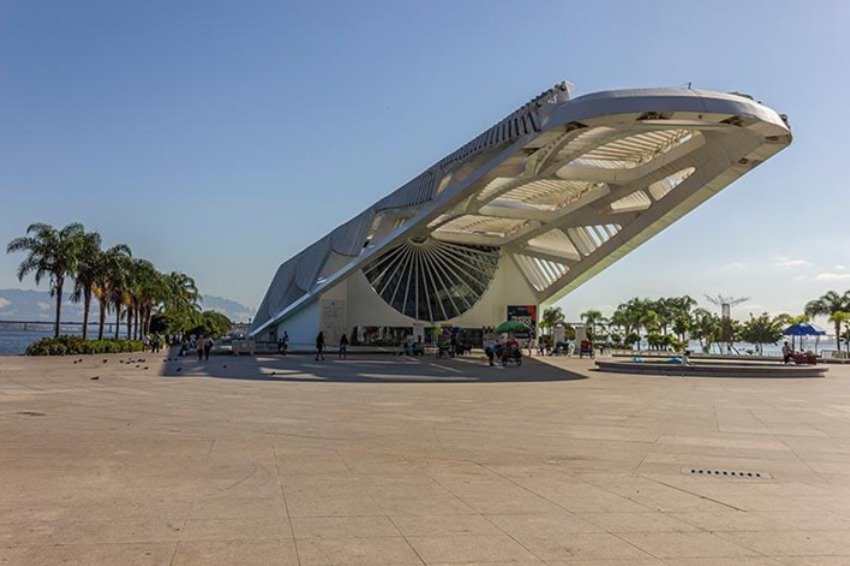
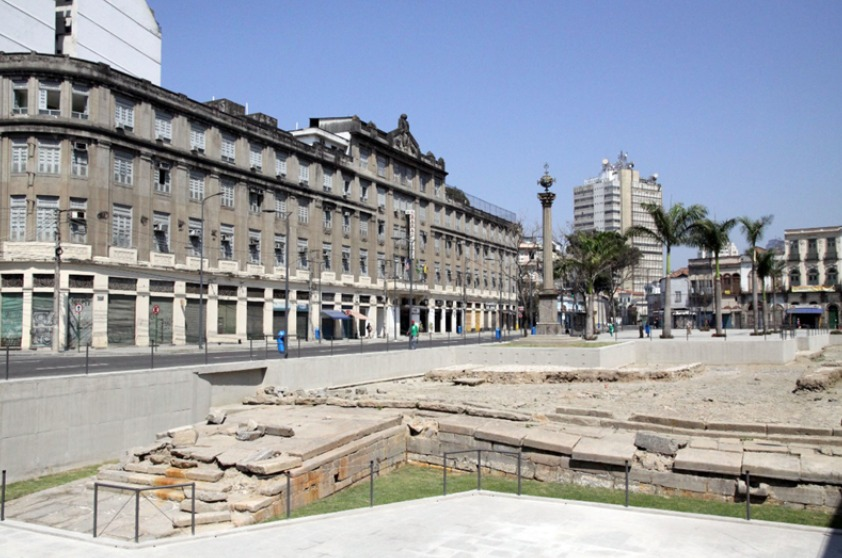

Roots Guide
Pontos Historicos

Museu do Amanhã
Museu construído na capital fluminense ao lado da Praça Mauá, na Zona Portuária. Vai propor uma viagem imersiva e tecnológica simulando os próximos 50 anos, propondo a reflexão do público sobre temas importantes, como sustentabilidade e o futuro da humanidade. Curiosidades: É um museu de ciências interativo. Planejado pelo arquiteto espanhol Santiago Calatrava, ele convida o público a explorar os possíveis futuros da humanidade e do planeta através de arte, tecnologia e dados científicos. Endereço: Praça Mauá, 1 - Centro, Rio de Janeiro, RJ Link do Maps: link

Cais do Valongo
É um sítio arqueológico localizado na Zona Portuária do Rio de Janeiro. Durante o período de escravidão, foi o principal porto de entrada de africanos escravizados nas Américas. No ano de 2017, foi declarado Patrimônio Mundial pela UNESCO, sendo um símbolo de memória e resistência. Ele é o mais importante e único vestígio material preservado da chegada de africanos escravizados ao continente americano. Curiosidades: Entre 1811 a 1831, recebeu cerca de 1 milhão de escravizados. Foi redescoberto em 2011, durante as obras do Porto Maravilha. O nome "Valongo" tem origem no latim Valum Logum, significando "vale longo" e em 1843, foi aterrado para a construção do "Cais da Imperatriz", feito para receber a esposa de D. Pedro II. Posteriormente, ambos foram cobertos, numa tentativa histórica de apagar o registro da escravidão. Valor de entrada: Gratuita, autoguiada todos os dias, podendo ser visitado a qualquer hora. Endereço: Avenida Barão de Tefé, Gamboa - Rio de Janeiro, RJ. Link do Maps: link